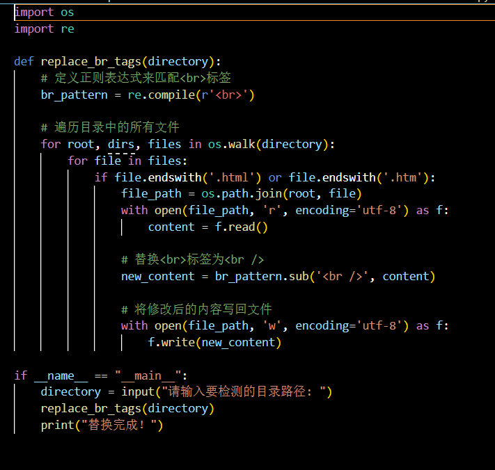

Python脚本批量替换错误的br标签
本文制作人员:Al2(SO4)3-硫酸铝
最早更新日期:2024.7.3
最后更新日期:2024.7.3
众所周知,在HTML中没有内容的HTML元素被称为空元素,空元素是在开始标签中关闭的.
<br>就是没有关闭标签的空元素,它定义换行.
但是,在XHTML,XML以及未来版本的HTML中所有元素都必须被关闭.
在开始标签中添加斜杠,比如 <br />是关闭空元素的正确方法,HTML,XHTML和XML都接受这种方式.即使 <br>在所有浏览器中都是有效的,但使用 <br /> 其实是更长远的保障.
那么,<br>标签作为HTML常用的标签之一,很多人在使用的时候都会忘记添加斜杠,或者接手的项目里一堆HTML文件并且都没有加/,虽然目前可以解析,但不是长久之计,
所以我写了一个脚本,批量替换指定目录下的HTML文件(.html/.htm)中的<br>标签为<br />标签,以获得更好的兼容.
查看脚本代码
下载这个脚本
代码截图:
